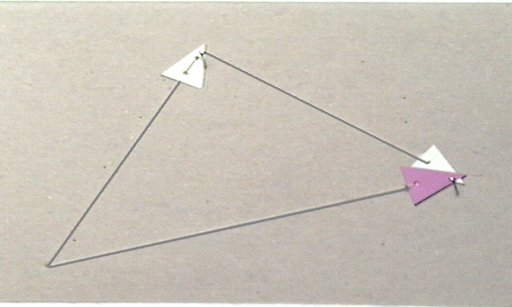
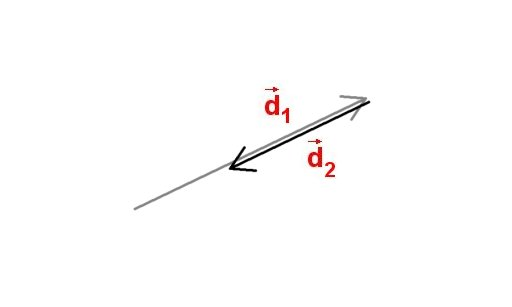

- Fig. 1
- O succesiune de deplasări ale unei bile.
|
- Fig. 2
- Un singur vector poate descrie succesiunea de deplasări.
|
- Fig. 3
- Deplasarea rezultantă.
|

- Fig. 4
- "Calculator" pentru compunerea mărimilor vectoriale.
|
- Fig. 5
- Confecţionarea reprezentărilor vectorilor care se compun.
|
- Fig. 6
- Calculul rezultatului compunerii a două deplasări succesive.
|
- Fig. 7
- Două deplasări succesive în prelungire.
|

- Fig. 8
- Două deplasări având sensuri contrare.
|
- Fig. 9
- Două deplasări succesive având mărimi egale şi sensuri contrare.
|

- Fig. 10
- Suprapunerea unui sistem de axe peste reprezentarea relaţiei dintre trei vectori.
|